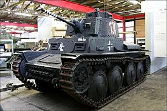

how to now what is and waht is not a Panzer
soo waht is a Panzer? a panzer is a german word for tanks ore the name of ther ww2 tanks. 
a good exapel for a panzer is the panzerkapfwagen.38(t)f that you see for image on the left it was a tank variant of the panzer 38(t)a model form czechoslovakia.
but it was taken by the germans under ww2.
next we shall know what is not a pnazer. so waht is not a panzer basically it is evry tank that is not made by germeny a good exempel is the background.
the background is a kv 2 a soviet bunker buster tank made in 1939-1941 to blow opp bunker and stuff it had a wery slow turet rotion 3.6 to 6 °/s by manuel lebor
som panzer like the panzer 8 haed